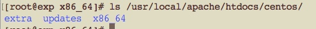
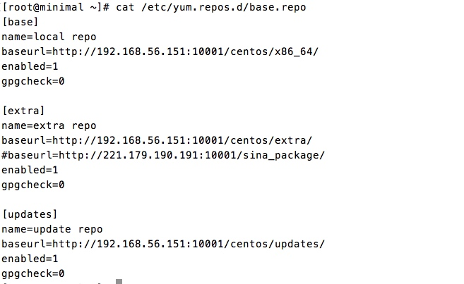
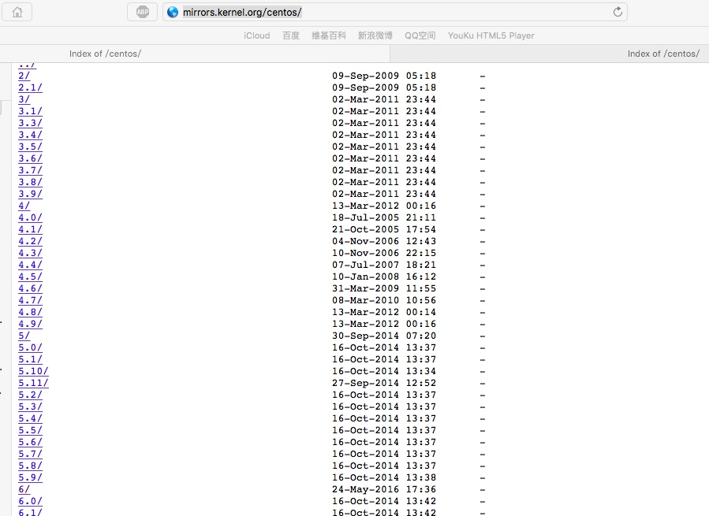
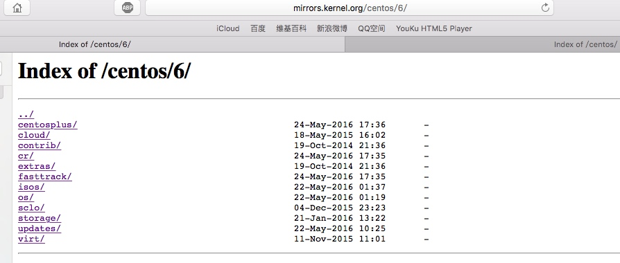
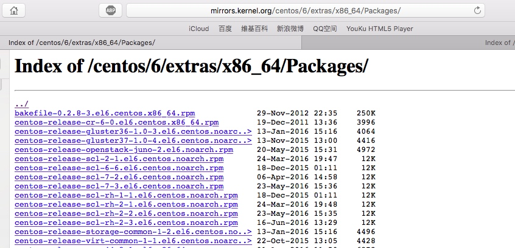

搭建本地yum源服务器
好久没写博客了，最近比较动荡，临毕业时跳了个槽，感觉之前做的金融方向的运维不是很适合我，对各方面的限制还是太多。金融的IT对于安全似乎要求很高，云盘，U盘都不能用，还要经常给客户做产品实施，对于linux方面涵盖的不是很多，更侧重于硬件，比如会购买高端交换机，万兆网卡，硬件防火墙等等。做的时间久了越来越感觉是个IDC维护的（没有看不起IDC运维的意思），而且还有很多时间是在做产品测试。。。这与我规划的运维方向差太多了，没办法，只能换公司了。
目前在新浪阅读做助理运维，来之后第一感觉就是自由，上班一个小时的弹性时间，各种盘随便用，当然免费饮料是必不可少的，来的第一天内心就在想，互联网公司毕竟是互联网公司啊。最近接触了yum源搭建和源码打包rpm，yum源搭建以前也做过，不过这次做了有了更多的理解，以前只是纯粹的死记，打包rpm就很烦了，deb包的制作是很方便快捷的，rpm包得书写规则实在是头疼。先讲讲使用http搭建yum源吧。
yum源的搭建可分为三步：①搭建Apache服务器②挂载ISO镜像，将镜像中的包放至Apache服务器目录下③ISO镜像的包比较老旧，可以定时同步其他源中的包到本地
1、搭建Apache服务器
此步随便使用yum安装还是源码编译安装都可以，只要在后面将包正确的放置到httpd的目录中即可
我使用的是编译安装，安装目录是/usr/local/apache，安装完毕后修改/usr/local/apache/conf/httpd.conf文件，将DocumentRoot的/var/www/html改为/usr/local/apache/htdocs，说明后面我会将我的包放在/usr/local/apache/htdocs目录下。
/usr/local/apache/bin/apachectl -k start启动Apache服务，iptables -A INPUT -p tcp --dport 10001 -j ACCEPT,注意，你在Apache中配置开放了那个端口，iptables就允许那个端口进入，iptables设置完毕，使用/etc/init.d/iptables save保存。
2、挂载镜像
进入/usr/local/apache/htdocs目录，创建centos目录，在centos目录下，创建extra，update，x86_64三个平行目录。
将centos6的镜像挂载到某一目录下，然后将Packages目录中的所有包都拷贝至/usr/local/apache/htdocs/x86_64下。
操作完毕后，如图所示：

依次对三个目录进行createrepo操作，目的是生成repodata目录，自动创建索引信息。
createrepo -pdo /usr/local/apache/htdocs/x86_64 /usr/local/apache/htdocs/x86_64
createrepo -pdo /usr/local/apache/htdocs/extra /usr/local/apache/htdocs/extra
createrepo -pdo /usr/local/apache/htdocs/update /usr/local/apache/htdocs/updates
执行完毕后在x86_64、extra、updates下自动生成了repodata目录，此时yum源已经搭建完毕。
3、客户端访问yum源服务器
查询yum源服务器的ip地址，然后在客户端的/etc/yum.repos.d创建base.repo文件.这里需要特别注意，如果Apache服务器开启的端口不是80端口，那么在写baseurl的时候需要将端口号写出来，否则客户端默认访问的80端口！

此时整个过程已经完毕，客户端可以使用yum安装软件包。如果有新的包添加进了x86_64、extra、updates的任意一个目录中，都需要createrepo --update dir来更新yum源服务器的索引。客户端也需要yum makecache一下。
TIPS：
之前说过ISO镜像中的软件包太陈旧了，同时，ISO的包也只有6000个左右，不是很多，那么可以将其他yum源服务器的包同步到本地，可以使用rsync命令直接镜像过来，在此提供几个支持rsync同步的网站
http://mirrors.kernel.org
http://rsync.mirrors.ustc.edu.cn
http://mirrors.neusoft.edu.cn
具体镜像方法：
1、进入本地yum源服务器的某个要镜像的目录，比如/usr/local/apache/htdocs/extra目录
2、访问http://mirrors.kernel.org/centos/目录可以发现有很多的数字目录，这些都是不同的centos版本

3、进入6目录，可以看到有好几个目录

一般我们要同步的是os(与本地yum源的x86_64对应)、updates、extras，当然你也可以全部同步。我们目前要同步extras目录，那么就进入extras目录，选择适合自己的路径，我是x86_64架构的电脑，进入x86_64,所有的包都在Packages下，如下图：

4、找到正确的路径后就可以开始同步了
在本地yum源服务器上输入rsync -avrt --delete rsync://mirrors.kernel.org/centos/6/extras/x86_64/Packages/ /usr/local/apache/htdocs/centos/extra
同步完毕后使用createrepo --update /usr/local/apache/htdocs/centos/extra更新索引。
还有一点就是客户端的repo文件的baseurl是很灵活的，你甚至可以在不同的模块写不同的连接，只要你写的url的源可以使用就没问题。